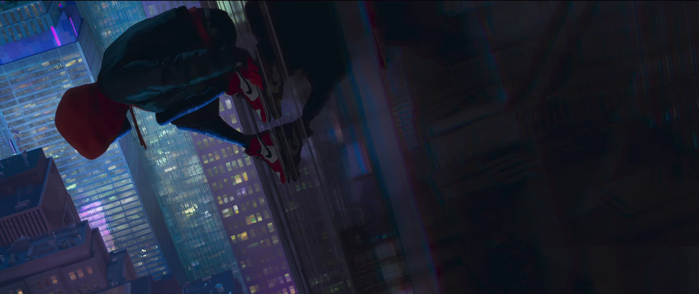

About our friendly neighbourhood teenager :
Miles about to take the "Leap of Faith", quite literally
Miles is awesome in a million ways, yes he is Spider Man, and in addition to basic Spider Man abilities he also has the power to turn invisible and to venom strike (electrocute) someone. Pretty cool, huh!
But that ain't it. He witnessed the death of Peter Parker, THE SPIDER MAN that everyone knows, and who in his reality had been Spider Man for over a decade, inherited his name, defeated Kingpin, saved his city, Brooklyn from obivion. The reason he inspires me so much is because he is a normal kid who happened to get those powers by accident, ran scared through the streets thinking what he should do, found friends that understood him, sucked at being the Spider Man, got lectured by his dad (who hated the Spider Man at the time by the way), but trusted in his teacher (Spidey from another dimension), took a leap of faith, and came out on the other side as the awesome Spider Man, eveyone knows him to be.